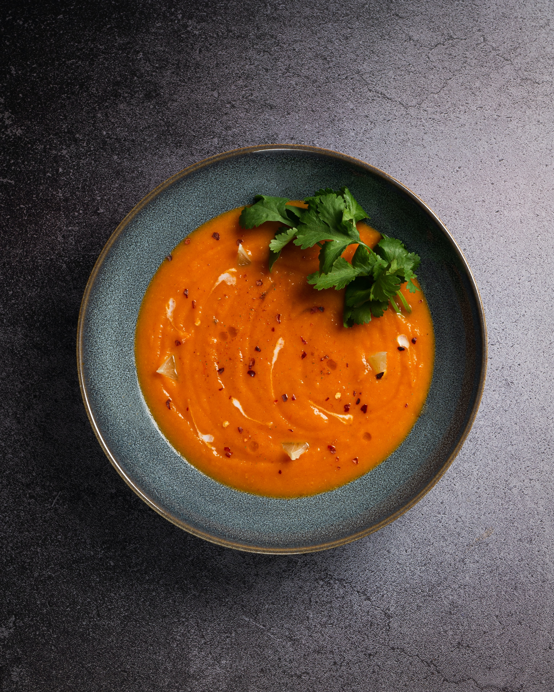

Simple tomato soup

The following recipe is my favorite soup to make. It is ready in 30 minutes, and can be eaten as leftovers the next day. You can top it with parsley, basil, croutons or cream.
You can combine fruity sundried tomatoes with canned tomatoes, perfect for the winter season.
Ingredients
- 1 tbsp of extra-virgin olive oil
- 2 garlic cloves, crushed
- 2 x 500g cans of tomatoes
- 1 tsp of sugar
- 3 chopped sun dried tomatoes
- salt and pepper to taste
- parsley and cream as toppings
Steps
- Heat the oil in a large pan, add garlic and soften for a few minutes on low heat.
- Add sun dried tomatoes, canned tomatoes, salt, pepper and sugar.
- Let the soup bubble for 20 minutes.
- Blend the mixture and add sour cream on top for creaminess.
- Serve with parsley.